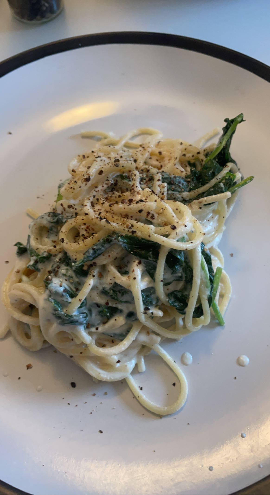

Mama's Pasta

Description
No item of food is more comforting than this creamy pasta.
Well maybe ice cream is.
Or chocolate cake.
Or warm tomato soup with grilled cheese
Or... ok this is besides the point.
Whenever I would feel down or even anxious, this was the pasta
my mother made for me. It is creamy, it is rich and it's got hint of zest.
And because it's so easy to make, this was the first recipe I ever learnt (after boiled eggs)
Any time I feel stressed out at uni or I miss my mother terribly,
I whip up this delicious dish. Not only is it quick to make, it also only requires
4 ingredients
Ingredients
- Spagetthi
- Ricotta Cheese
- Lime
- Olive Oil
- Salt
- Pepper
- Nutmeg (or cinammon)
- Optional: parmesan cheese
Steps
- Biol your spagetthi as per its instructions. Remeber to reserve some pasta water
- In a large bowl, empty a tub of ricotta cheese and mash with a fork
- Add two tablespoons of oliver oil
- Pour the juice of two limes
- Add half a teaspoon of nutmeg or cinammon
- Add salt and pepper as per your liking.
- Pour in a little bit of the pasta water and whisk the sauce.
Do not think out the sauce - it should still be thick.
- Drain your pasta, add to the sauce and mix
- Plate it and top it with some parmesan cheese if you'd like!